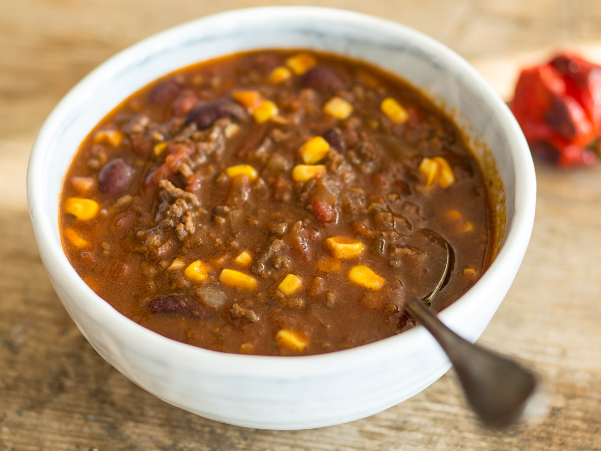

Chili Recipe

Chili for connoisseur!
Hot Chili for real men. Beware and try out at your own risk!
Ingredients:
- 1kg grounded beef
- 1 can sieved tomatos
- 100ml red wine
- 100ml vegetable broth
- 150g corn
- 250g beans
- 1 red pepper
- 1 green pepper
- 10 carolina reaper
Steps:
- heat some oil in a pot and roast the meat
- extinguish with red wine and let it boil
- add sieved tomatos and let it simmer
- add remaining ingredients and let it simmer at least for 3 hours
- Serve with white bread and milk
- Bon Appetite!